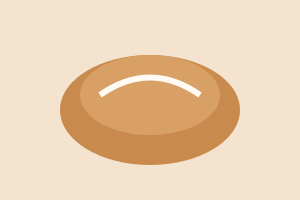

Kardemummabulle
Bakad på färsk kardemumma och pärlsocker.
35 kr

Hos oss bakas allt från grunden. Kom in för en bulle, en kopp kaffe och en stund för dig själv.
Se menynKafé Rubiácea öppnade 2019 och drivs av två vänner som ville ha ett ställe där man vågar sitta kvar. Vi handlar lokalt och bakar varje dag. Skön Brasiliansk stämning med musik, kaffe och fika. Välkommen in!
Öppet vardagar 07-18 och helger 09-16.